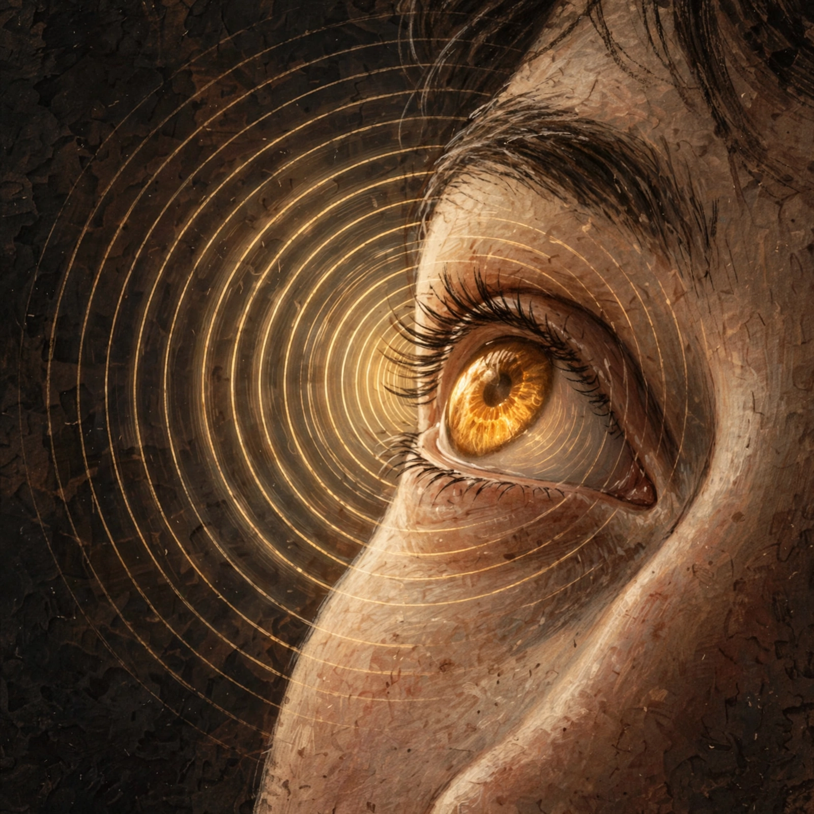

Mirada es un tablero de comunicación que se controla solo con la mirada y una webcam común. Sin hardware de miles de dólares. Sin recalibrar cada cinco minutos.
El anillo es tu mirada; el hold es tu click — igual que el hold de 0.4 s con los ojos en el producto real. Si tu navegador tiene voz en español, la vas a escuchar.
Los equipos clínicos de mirada — Tobii, PCEye — son precisos y cuestan miles de dólares. Las alternativas con webcam son gratis, pero se descalibran en minutos: te mueves un milímetro, cambia la luz, y el cursor ya no está donde miras.
Para quien depende de la mirada como único input — ELA, lesión medular, parálisis cerebral — recalibrar a cada rato no es una molestia: es perder la voz.
de deriva típica en sesiones de webcam sin corrección. Nuestras celdas de ~450 px y la corrección en vivo existen para sobrevivir exactamente eso.

Una webcam común y MediaPipe siguen tu iris a ~30 fps, todo en tu máquina. Un resaltado ámbar muestra en vivo a dónde cree el sistema que miras.
Cierra los ojos 0.4 s sobre la palabra. No es un parpadeo — los naturales duran 0.1 s — es un hold deliberado con compuerta EAR calibrada a tus ojos. El cuidador también puede usar el mouse en cualquier momento.
La frase suena al instante con voz offline del sistema, en español o inglés. Y cada selección vuelve a calibrar el mapa: mientras más hablas, mejor te sigue.
Dos ritmos, como la visión humana. Un loop local rápido (~30 fps) convierte landmarks en punto de pantalla. Un loop semántico lento propone anclas de alta certeza — la celda que acabas de elegir, el renglón que lees, el botón al que diste click — y corrige el mapa con regresión online acotada (≤25 px por update).
Nunca un LLM por frame. Los modelos de Meta aportan etiquetas escasas; la matemática local hace la corrección. Estado honesto del prototipo: las anclas por selección ya corrigen en vivo, y el loop semántico con Spark + SAM corre en replay sobre sesiones grabadas.
“Me levanté, me fui, regresé… y siguió calibrado.”